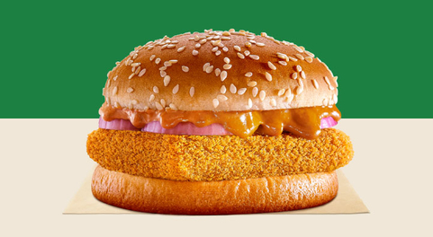

Hot's Cheezy Burger
A cheeseburger is a hamburger topped with cheese. Traditionally, the slice of cheese is placed on top of the meat patty. The cheese is usually added to the hamburger patty near the end of the cooking time, which allows the cheese to melt. Cheeseburgers can include variations in structure, ingredients and composition. As with other hamburgers, a cheeseburger may include various condiments and other toppings such as lettuce, tomato, onion, pickles, bacon, avocado, mushrooms, mayonnaise, ketchup, and mustard.Twisted Whopper Veg
The Whopper is the signature hamburger and an associated product line sold by the international fast food restaurant chain Burger King and its Australian franchise Hungry Jack's. Introduced in 1957, the hamburger has undergone several reformulations, including changes to portion size and bread used. The hamburger is well known in the fast food industry, with Burger King advertising itself as "the Home of the Whopper" and naming its kiosk stores the BK Whopper Bar. In response to the Whopper, Burger King's competitors have developed similar products designed to compete against it.
Hot's Cheezy Burger
A cheeseburger is a hamburger topped with cheese. Traditionally, the slice of cheese is placed on top of the meat patty. The cheese is usually added to the hamburger patty near the end of the cooking time, which allows the cheese to melt. Cheeseburgers can include variations in structure, ingredients and composition. As with other hamburgers, a cheeseburger may include various condiments and other toppings such as lettuce, tomato, onion, pickles, bacon, avocado, mushrooms, mayonnaise, ketchup, and mustard.Twisted Whopper Veg
A cheeseburger is a hamburger topped with cheese. Traditionally, the slice of cheese is placed on top of the meat patty. The cheese is usually added to the hamburger patty near the end of the cooking time, which allows the cheese to melt. Cheeseburgers can include variations in structure, ingredients and composition. As with other hamburgers, a cheeseburger may include various condiments and other toppings such as lettuce, tomato, onion, pickles, bacon, avocado, mushrooms, mayonnaise, ketchup, and mustard.